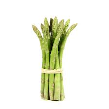
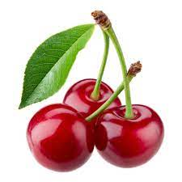
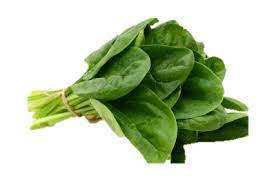
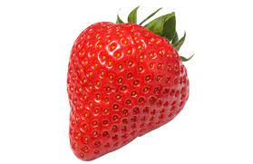

Les asperges sont des légumes verts tendres et délicats, riches en fibres, vitamines et minéraux. Elles peuvent être grillées, cuites à la vapeur, ou ajoutées à des plats tels que des omelettes ou des salades.

Les cerises sont des fruits sucrés et juteux, disponibles dans une variété de couleurs. Elles sont riches en antioxydants et peuvent être consommées fraîches, utilisées dans des desserts, ou transformées en confitures.

Les épinards sont des feuilles vertes foncées riches en fer, calcium et vitamines. Ils sont polyvalents et peuvent être consommés crus dans des salades, cuits dans des plats sautés ou ajoutés à des smoothies.

Les fraises sont des baies sucrées et juteuses, riches en vitamine C et en antioxydants. Elles sont souvent consommées fraîches, ajoutées à des salades, des desserts ou utilisées pour préparer des confitures.